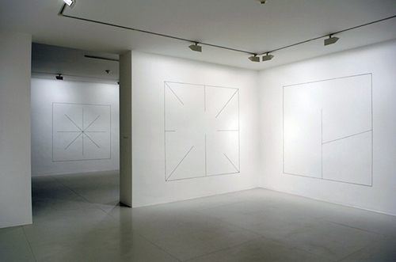
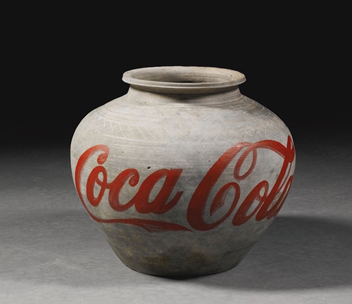
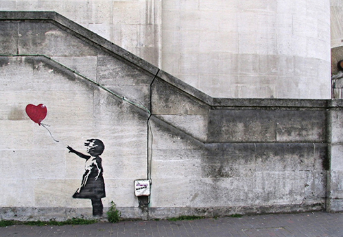
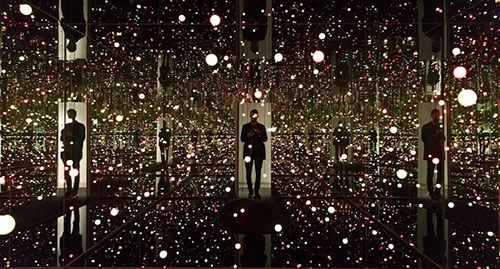

Minimalism
Like Conceptualism, Minimalism materialized in the 1960s and is still prevalent today. According to the Tate, both movements “challenged the existing structures for making, disseminating and viewing art.” What sets Minimalism apart, is that it's simple aesthetic invites viewers to respond to what they see—not what they think a given work of art represents. Donald Judd and Dan Flavin are some key Minimalist artists.

Conceptualism
In turn, Pop Art also art helped shape Conceptualism, which fought against the idea of art as a commodity. Though this experimental movement is rooted in art of the early 21st century, it emerged as a formal movement in the 1960s and remains a major contemporary art movement today. In conceptual art, the idea behind a work of art takes precedence. Major conceptual artists include Damien Hirst, Ai Wei Wei, and Jenny Holzer.

Street Art
As one of the most recent contemporary art movements, street art is a genre that gained prominence with the rise of graffiti in the 1980s. Often rooted in social activism, street art includes murals, installations, stenciled images, and stickers erected in public spaces. Key street artists include figures from the 1980s, like Jean-Michel Basquiat and Keith Haring, as well as practicing artists like Banksy and Shepard Fairey.

Installation Art
Like performance pieces, installation art is an immersive medium of art. Installations are three-dimensional constructions that transform their surroundings and alter viewers' perceptions of space. Often, they're site-specific and large-scale. Well-known installation artists include Yayoi Kusama and Dale Chihuly. A unique spin on installation art, Earth Art is a movement in which artists transform natural landscapes into site-specific works of art.
